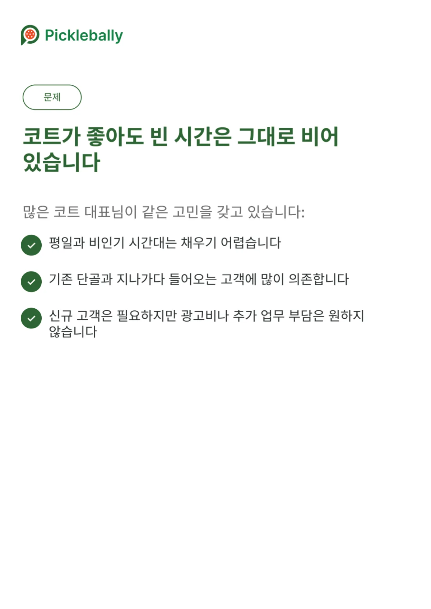
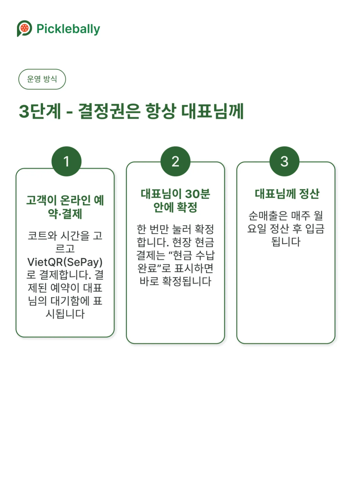
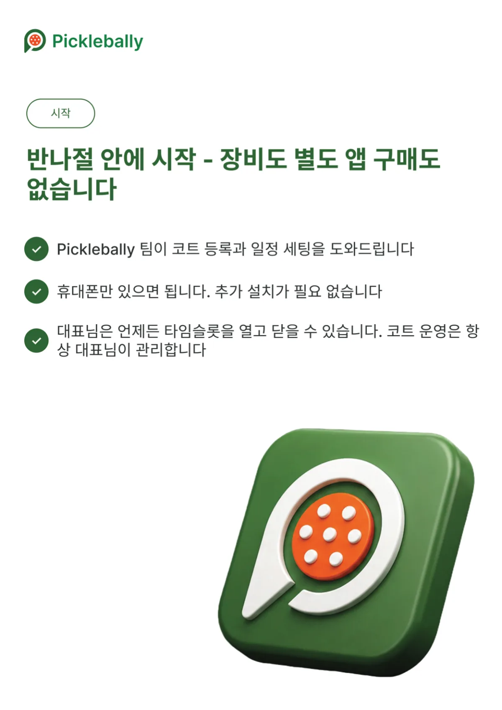
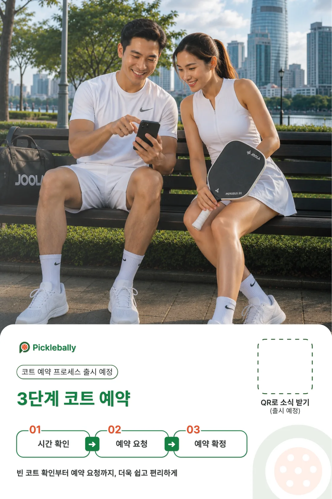

어떻게 만들었나
01
빈 시간대와 플레이어를 잇습니다
코트가 좋아도 평일과 비인기 시간대는 비어 있기 쉽고, 운영자는 단골과 지나가다 들어오는 손님에게 많이 기댑니다. 한편 플레이어는 필요한 시간만 쉽고 빠르게 예약하고 싶어 합니다.
Picklebally는 이 둘을 한 앱에서 만나게 합니다. 플레이어는 위치와 가능한 시간으로 코트를 찾고, 운영자는 비어 있던 시간을 새 고객으로 채웁니다.

02
결정권은 언제나 코트 대표님께
예약은 세 단계로 흐릅니다. 고객이 온라인으로 시간을 고르고 VietQR(SePay)로 먼저 결제하면, 예약이 대표님의 대기함에 표시됩니다. 대표님이 30분 안에 한 번 눌러 확정하고, 현장 현금 결제는 결제 완료로 표시하면 바로 확정됩니다.
결제가 끝났다고 예약이 자동으로 확정되지는 않습니다. 코트 사정에 맞게 받을지 말지는 늘 운영자가 정하도록 설계했습니다.

03
반나절이면 시작할 수 있게
운영자가 새 장비나 별도 앱을 살 필요는 없습니다. Picklebally 팀이 코트 등록과 일정 세팅을 함께 해 주고, 대표님은 휴대폰 하나로 운영자 모드에서 예약과 타임슬롯을 관리합니다.
플레이어 기능과 운영자 모드는 하나의 iOS 앱에 함께 들어 있고, 영어와 베트남어, 한국어를 지원합니다.

04
코트에 붙는 인쇄물까지
앱만 만들고 끝내지 않았습니다. 코트 대표님께 드리는 영업 자료와 파트너 핸드북, 코트 벽에 붙는 포스터와 전단까지 한국어와 베트남어로 함께 만들었습니다.
포스터의 QR을 찍으면 앱으로 이어지도록 설계해, 코트를 찾은 손님이 다음 예약을 앱에서 하도록 돕습니다.
